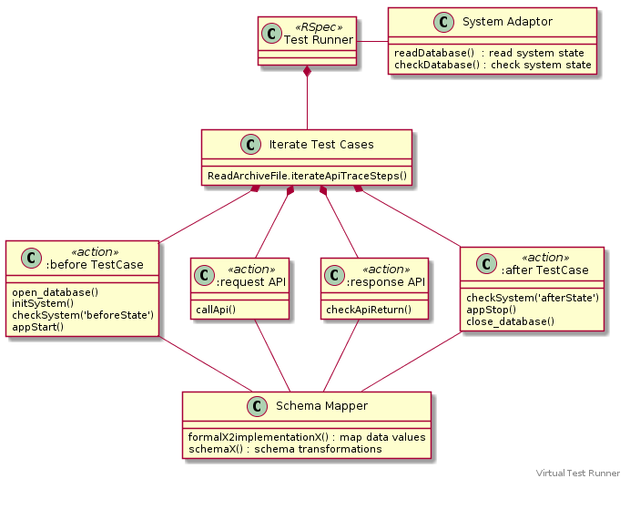

Test runner uses RSpec framework with tests wrapped with in
describe block starting with
require_relative "../spec_helper" describe "virtual-system-tests" do
and ending with
end # virtual system tests
Define directrory, where to read API Trace steps, and the the
interface to test:
fixtureDir = VIRTUAL_SYSTEM_TEST_INPUT_DIRECTORY interface = "TimeoffRegisterCompany"
iterateApiTraceSteps
API ReadArchiveFile.iterateApiTraceSteps in tla-trace-arch GEM
iterates API trace steps using a Ruby block starting with
Sbuilder::TlaTraceArch::ReadArchiveFile.iterateApiTraceSteps( fixtureDir, interface ) do |sha1, apiTraceStep| # String identifying test case step testDescription = "Step #{apiTraceStep["00-step"]["step"]} - interface #{apiTraceStep["00-step"]["interface"]} SHA1=#{apiTraceStep["00-step"]["sha1"]}"
and ending with
end # iterateTestCases
Lambda functions to transform data values from formal model data space to implementation data space:
TODO: mapping should use formal model domain information
# Map 'formalEmail' to 'implementationEmail' formalEmail2implementationEmail = ->(formalEmail) do # add domain '@test.com' to make formal model # email to valid email in implementation "#{formalEmail || "noemail"}@test.com" end # Map 'formalLastName' to 'implementationLastName' formalLastName2implementationLastName = ->(formalLastName) do # just prefix "lastt-#{formalLastName}" end
Schema transformations use hashformer GEM, a Ruby Hash-based DSL, for transforming data from formal model space to implementation space
# Schema transform formal model entity 'User' schemaUser = { "name" => HF["user_name"], "lastname" => HF["user_name"].__as{ |x| formalLastName2implementationLastName[x] }, "email" => HF["user_email"].__as{ |x| formalEmail2implementationEmail[x] }, } # Schema transform formal model entity 'Company' schemaCompany = { "name" => HF["company_name"], } # Schema transform formal model 'beforeState' & 'afterState' schemaModelState = { Users: HF[:Timeoff_Users].to_a.map{ |u| HF.transform( u, schemaUser) }, Companies: HF[:Timeoff_Companies].to_a.map{ |u| HF.transform( u, schemaCompany) }, } # schemaModelState # Schema transform formal model 'apiInput' schemaApiInput = { "name" => HF["user_name"], "lastname" => HF["user_name"].__as{ |x| formalLastName2implementationLastName[x] }, "email" => HF["user_email"].__as{ |x| formalEmail2implementationEmail[x] }, } # Schema transform formal 'apiResponse' schemaStatus = { "success" => HF["status"].__as{ |stat| stat == "status_200" }, }
:before TestCasesupport_test_progress "------------------------------------------------------------------" support_test_progress "#{testDescription}" # Db open_database( dbFile ) # Init system delete_table( "Users") delete_table( "Sessions") delete_table( "Companies") # check systems support_test_progress " Check beforeState" checkDatabase( asIs: readDatabase, toBe: map_transform( comment: "beforeState>", data: apiTraceStep["01-inp"], xSchema: schemaModelState ) ) # app support_test_progress " Start application" appStart
:request Apisupport_test_progress " Make API call" # navigate to regitration form ui_navigate_main_page ui_choose_register # fill registration ui_register_form_fill( map_transform( comment: "api_input", data: apiTraceStep["02-api"], xSchema: schemaApiInput)) # submit registation = API call ui_register_form_submig
:response API# Check return status from API support_test_progress " Check API response" if ( map_transform( comment: "api_return", data: apiTraceStep["03-ret"], xSchema: schemaStatus )["success"] ) then support_test_progress " Check API response - expect success" expect( page ).to have_content( "Registration is complete.") else support_test_progress " Check API response - expect failure" end
:after TestCase# Shutdown server support_test_progress " Stop application" appStop # run checks before closing database support_test_progress " Check afterState" checkDatabase( asIs: readDatabase, toBe: map_transform( comment: "afterStateToBe>", data: apiTraceStep["04-out"], xSchema: schemaModelState )) # close_database
readDatabasedef readDatabase { Users: select_from_table( "Users", getTableSchema( "Users")), Companies: select_from_table( "Companies", getTableSchema( "Companies")), } end
checkDatabase# Expect 'asIs' to include 'toBe' def checkDatabase( asIs:, toBe: ) chk_db_table_included( comment: "db-Users>", toBe: toBe[:Users], asIs: asIs[:Users], keyLambda: ->(r1,r2) { r1["email"] == r2["email"] } ) chk_db_table_included( comment: "db-Companies>", toBe: toBe[:Companies], asIs: asIs[:Companies], keyLambda: ->(r1,r2) { r1["name"] == r2["name"] } ) end
For the implementation refer to code in GitHub repo.